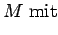

Inhalt Index DeskTop Bronstein

 Dynamische Systeme und Chaos Quantitative Beschreibung von Attraktoren Dimensionen Beispiele von Attraktoren
Dynamische Systeme und Chaos Quantitative Beschreibung von Attraktoren Dimensionen Beispiele von Attraktoren


Sei ein Parameter und M =[0,1] x [0,1] das Einheitsquadrat. Die Abbildung
|  | |||
| = | (17.51) |
Man erkennt die entstehende ,,Blätterteigstruktur``. Die Menge  ist invariant unter
ist invariant unter  und alle Punkte aus M werden von
und alle Punkte aus M werden von  angezogen. Der Wert für die HAUSDORFF-Dimension ist . Für das dynamische System
angezogen. Der Wert für die HAUSDORFF-Dimension ist . Für das dynamische System  existiert auf M ein invariantes Maß
existiert auf M ein invariantes Maß  , verschieden vom LEBESGUE-Maß. In den Punkten, wo die Ableitungen existieren, erhält man die JACOBI-Matrizen Hieraus ergeben sich die Singulärwerte und, demzufolge, die LYAPUNOV-Exponenten (bezüglich des invarianten Maßes . Damit gilt für die LYAPUNOV-Dimension
, verschieden vom LEBESGUE-Maß. In den Punkten, wo die Ableitungen existieren, erhält man die JACOBI-Matrizen Hieraus ergeben sich die Singulärwerte und, demzufolge, die LYAPUNOV-Exponenten (bezüglich des invarianten Maßes . Damit gilt für die LYAPUNOV-Dimension
. Die PESINsche Formel für die metrische Entropie stimmt hier, d.h., es gilt .